불씨 하나 v0.9 · 지금까지 한 일
v0.8.1을 플레이하시고 주신 말씀을 바탕으로 만든 v0.9입니다. 밸런스는 테스트할 수 있는 상태에서 마무리했고, 말씀하신 무기 강화 작업대까지 넣었습니다. 테스트 빌드(OneSparkA_v09.exe)는 만들어 두었고 지금 QA가 실제로 돌려 보고 있습니다.
| 항목 | 상태 | 비고 |
|---|---|---|
| 그림 판(강화 화면) | 끝남 | 시안 3으로 게임에 넣음 |
| 플레이 지적 1~4 | 끝남 | 나무 불, 나무 사라짐, 착탄 표시 |
| 음악 다시 만들기 | 끝남 | 5곡. 이제 가진 무기에 따라 초반·중반·후반 곡이 바뀜. 귀 확인은 아직 |
| 무기 강화 작업대 | 끝남 | U 키, 숙련도·강화 버튼, 연출, 소리 10개, 부품 모델 30개 (아래 4장) |
| 예전 저장 이어 하기 | 끝남 | v0.8.1 저장이 그대로 열림. 이미 찬 칸은 작업대에서 버튼만 누르면 됨 |
| 가격과 무기 세기 | 테스트용으로 마무리 | 아래 5장. 다듬기는 플레이 소감 뒤 |
| 남은 나무가 적을 때 끊김 | 고침 | 800그루 남았을 때 프레임 44.6→4.7ms |
| 위성 자동 포격 끊김 | 원인 측정 전 | 다시 할 때만 쓰는 기능. QA 뒤에 잼 |
| QA와 빌드 | QA 진행 중 | 빌드는 만들어 둠. 통과하면 승인 요청 |
1. 그림 판
예전 강화 화면 대신 고르신 시안 3 방식의 그림 판을 게임에 넣었습니다. 강화 줄과 가격은 게임 데이터에서 바로 읽어 와서, 가격이 바뀌어도 그림 판이 따라 바뀝니다.

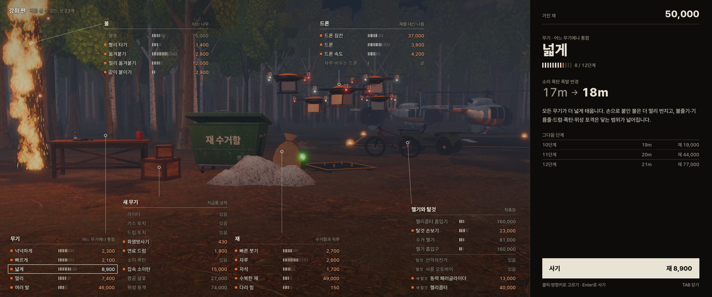


2. 플레이 지적 고친 것
v0.8.1에서 주신 지적 1~4번(나무 불 모습, 불붙은 나무가 사라지는 것, 착탄 표시)을 고쳤습니다. 헬기 사격의 손맛은 건드리지 않았습니다. 지금 착탄 표시는 이렇게 보입니다.
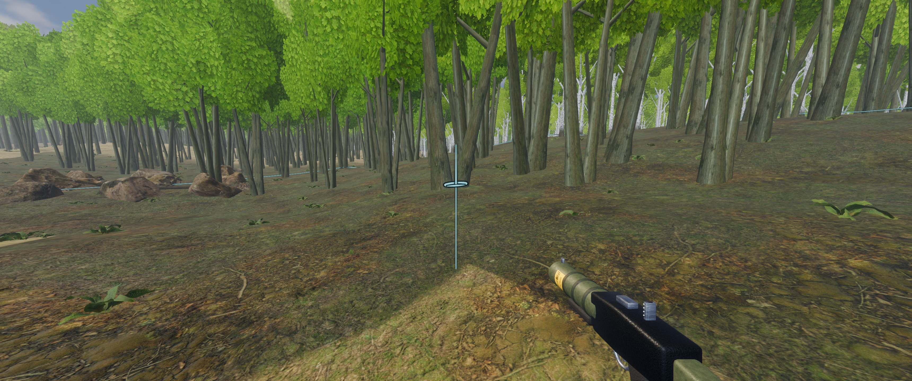
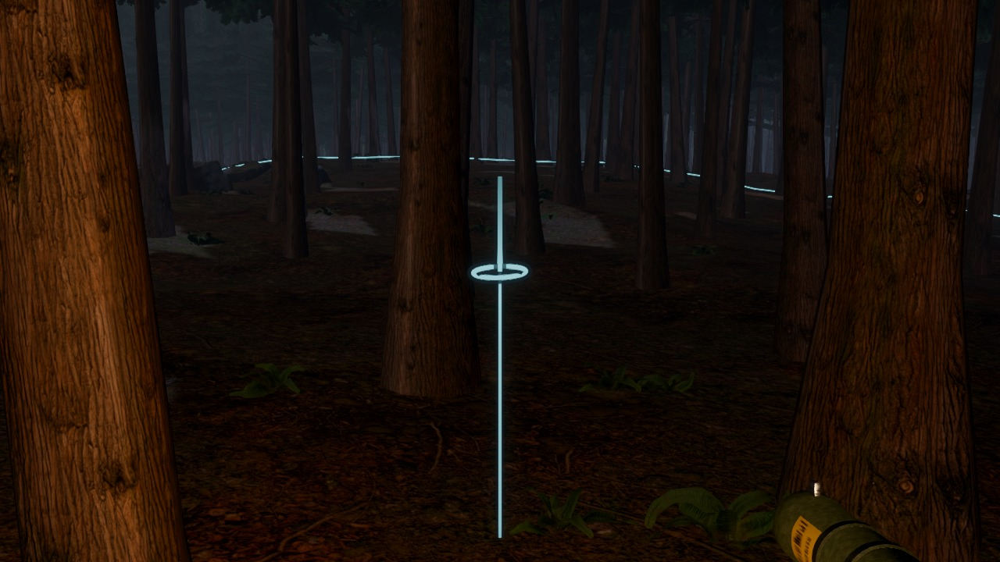
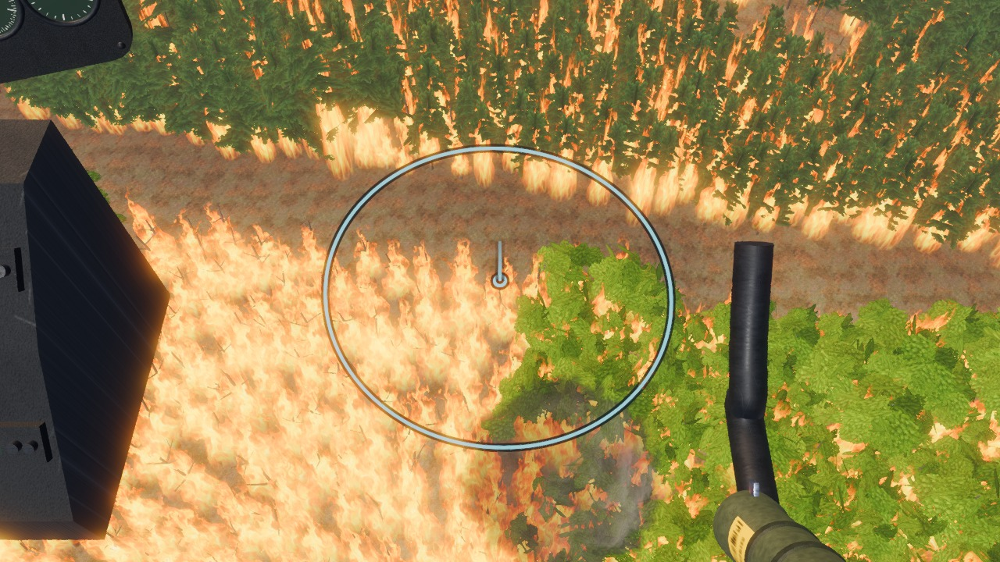


3. 음악
너무 웅장하다고 하신 배경 음악 5곡을 다시 만들어 게임에 넣었습니다. 예전 곡과 새 곡, 게임 소리와 섞였을 때를 나란히 들어 보실 수 있습니다: 음악 비교 페이지. 아직 아무도 귀로 확인하지 않아서, 들어 보시고 말씀 주셔야 합니다.
4. 무기 강화 작업대
말씀하신 대로 F 키와 F 기술은 모두 없앴습니다. 이제 그 무기로 나무를 태우면 숙련도가 쌓이고, 칸이 차면 화면에 "〈무기〉 · 강화할 수 있음" 한 줄과 작은 쇳소리가 나옵니다. 그때 U 키를 누르면 어디서든 작업대가 열립니다(열려 있는 동안 게임 시간은 멈춥니다).
- 왼쪽에 무기 10개와 강화한 칸 수, 오른쪽에 고른 무기의 숙련도와 세 칸의 부품 이름·효과가 나옵니다. 무기는 끌어서 돌려 볼 수 있습니다.
- 강화 버튼을 직접 누르면 약 5.4초 연출이 나옵니다: 카메라가 다가감 → 부품을 작업대에 놓음 → 장갑 낀 손이 끼움 → 래칫으로 볼트 세 번 조임 → 들어 올려 시험 점화 → 바뀐 수치 한 줄. 클릭하면 건너뜁니다. 단계마다 소리가 붙어 있습니다.
- 강화한 뒤에는 손에 든 무기에도 부품이 붙어 보이고, 불꽃과 폭발이 조금씩 커집니다. 효과는 따로 키를 누를 필요 없이 저절로 들어갑니다.
- 강화는 숙련도로만 열리고 재는 들지 않습니다.
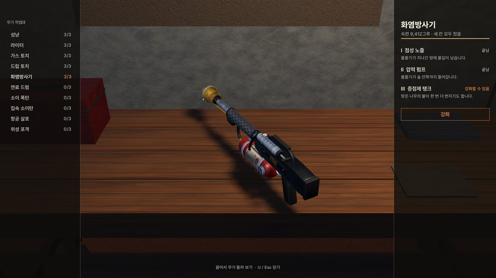
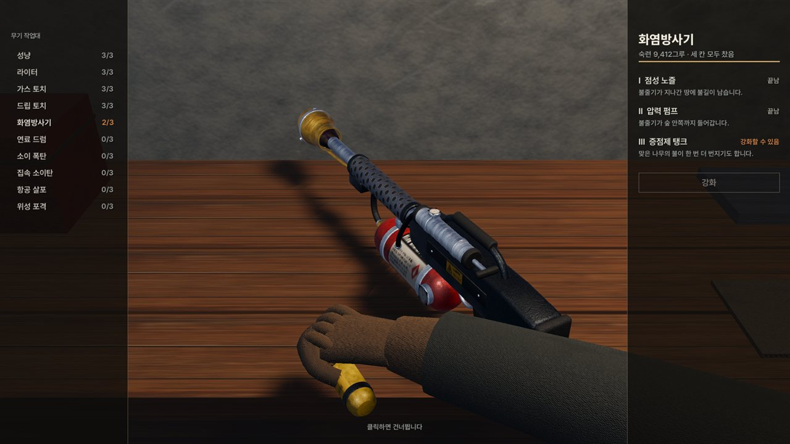
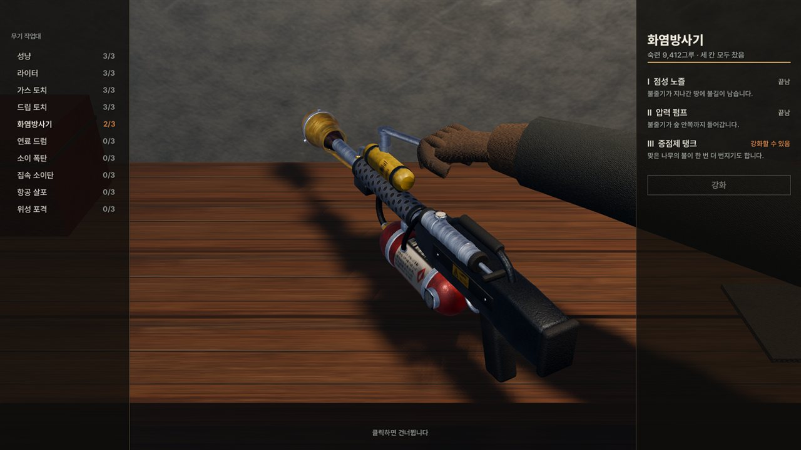
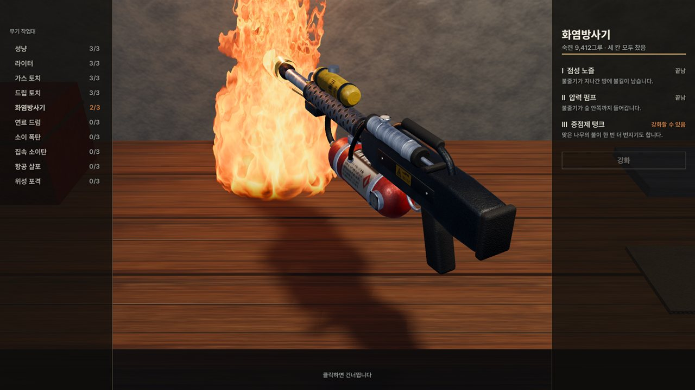
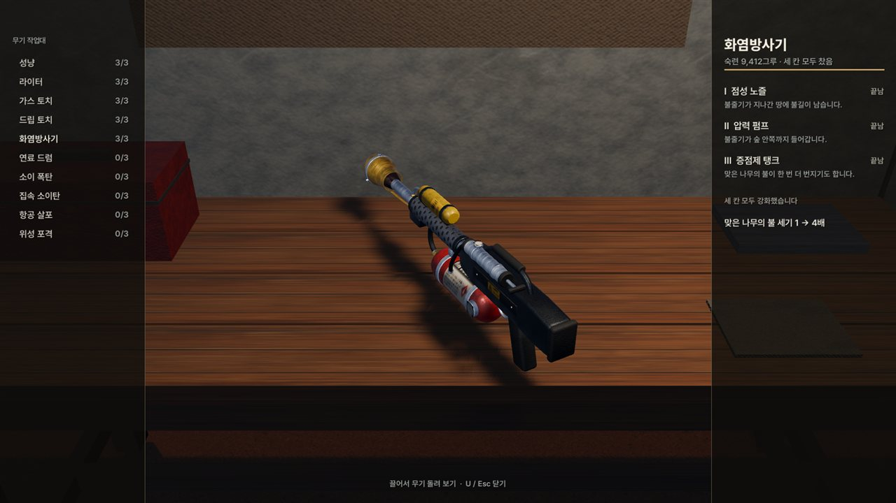
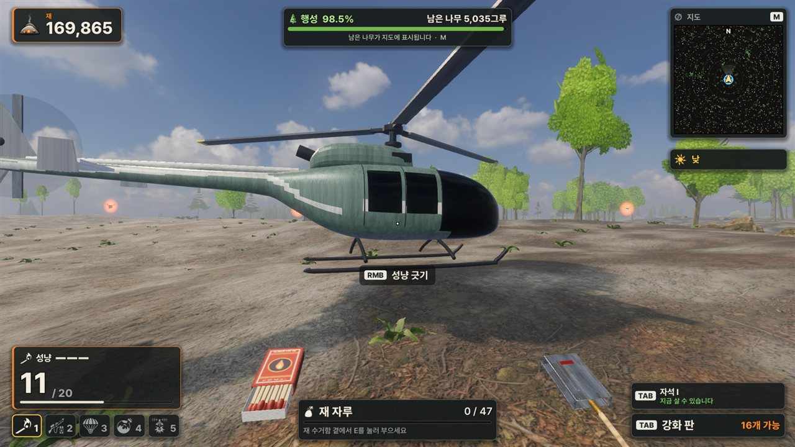
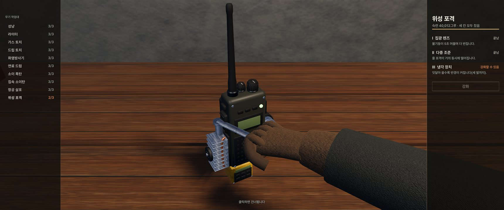
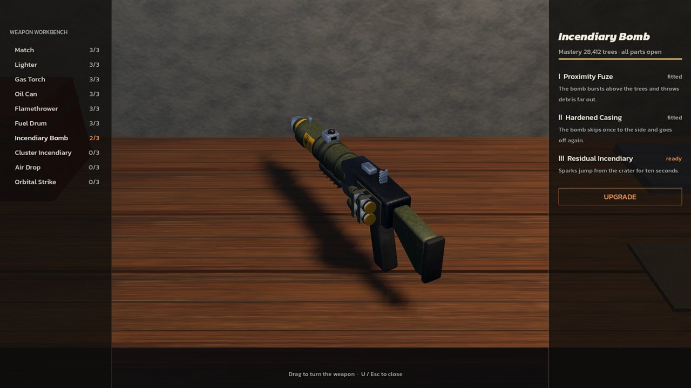
무기별 부품과 효과
| 무기 | 첫째 칸 | 둘째 칸 | 셋째 칸 |
|---|---|---|---|
| 성냥 | 긴 성냥 · 한 개비로 두 그루까지 붙습니다. | 방수 성냥 · 긋자마자 세게 타서 더 빨리 붙습니다. | 금속 성냥갑 · 붙인 나무의 불이 더 잘 옮겨붙습니다. |
| 라이터 | 바람막이 캡 · 누른 채 걸으면 앞쪽 나무에 저절로 붙습니다. | 터보 노즐 · 덤불에 대면 불이 앞으로 달려 나갑니다. | 큰 가스 칸 · 손 닿는 거리가 늘고 더 빨리 붙습니다. |
| 가스 토치 | 넓은 노즐 · 겨눈 나무 곁의 나무도 달아오릅니다. | 연장관 · 탈것에서 양옆 나무에 함께 붙습니다. | 예열 코일 · 지나간 자리 옆 나무가 3초 뒤 따라 붙습니다. |
| 드립 토치 | 흐름 밸브 · 비탈에서 기름이 내리막으로 흘러갑니다. | 쌍 노즐 · 기름 줄이 두 줄로 그어집니다. | 혼합 연료통 · 기름줄을 따라 불이 2배 빨리 달립니다. |
| 화염방사기 | 점성 노즐 · 불줄기가 지나간 땅에 불길이 남습니다. | 압력 펌프 · 불줄기가 숲 안쪽까지 들어갑니다. | 증점제 탱크 · 맞은 나무의 불이 한 번 더 번지기도 합니다. |
| 연료 드럼 | 점화 캡 · 더 넓게 터집니다. | 금속 띠 · 터질 때 불붙은 파편이 날아갑니다. | 연결 도화선 · 더 먼 드럼까지 따라 터지고, 잇달아 터지면 더 넓게 터집니다. |
| 소이 폭탄 | 근접 신관 · 나무 위에서 터져 파편을 멀리 뿌립니다. | 강화 외피 · 옆으로 한 번 튕겨 한 번 더 터집니다. | 잔류 소이제 · 떨어진 자리에서 10초 동안 불똥이 튑니다. |
| 집속 소이탄 | 꼬리 날개 · 자탄이 쏜 방향으로 한 줄로 떨어집니다. | 자탄 칸 추가 · 자탄이 한 번 더 갈라집니다. | 지연 신관 · 늘 3초 뒤 한꺼번에 터집니다. |
| 항공 살포 | 2번기 · 두 대가 나란히 와서 폭이 2배가 됩니다. | 회항 경로 · 돌아오며 옆줄에 한 번 더 쏟습니다. | 선행 살포기 · 앞 비행기가 연료를 먼저 뿌리고 뒤 비행기가 붙여 더 넓게 탑니다. |
| 위성 포격 | 집광 렌즈 · 불기둥이 5초 머물며 더 번집니다. | 다중 조준 · 줄 포격이 거의 동시에 떨어집니다. | 냉각 장치 · 잇달아 쏠수록 반경이 커집니다(세 발까지). |
강화할수록 얼마나 세지는가
같은 숲 8곳에서 강화 전(0칸)과 비교해 태운 양을 쟀습니다. 어느 칸도 무기를 약하게 만들지 않고, 세 칸을 다 하면 1.25~1.45배가 되게 맞췄습니다. 다 강화한 무기가 다음 무기보다 세지지 않게 하라고 하신 기준도 지킵니다.
| 무기 | 1칸 | 2칸 | 3칸 |
|---|---|---|---|
| 성냥 | 1.27 | 1.33 | 1.40 |
| 라이터 | 1.09 | 1.23 | 1.39 |
| 가스 토치 | 1.06 | 1.25 | 1.45 |
| 드립 토치 | 1.05 | 1.16 | 1.33 |
| 화염방사기 | 1.06 | 1.17 | 1.26 |
| 연료 드럼 | 1.11 | 1.26 | 1.31 |
| 소이 폭탄 | 1.22 | 1.30 | 1.43 |
| 집속 소이탄 | 1.03 | 1.24 | 1.31 |
| 항공 살포 | 1.11 | 1.23 | 1.41 |
| 위성 포격 | 1.11 | 1.23 | 1.32 |
강화할수록 붙는 부품
무기마다 위 줄은 손에 든 화면(멀리·가까이), 아래 줄은 작업대 위입니다. 왼쪽부터 0칸, 1칸, 2칸, 3칸입니다. 빛나거나 장난감 같은 부품은 쓰지 않고 놋쇠, 맨 쇠, 구리, 고무처럼 실제 재질로 만들었습니다.
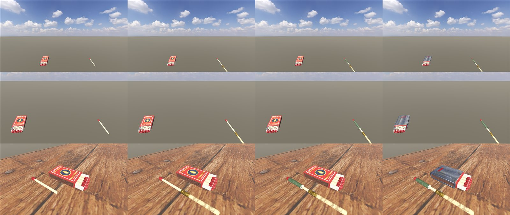
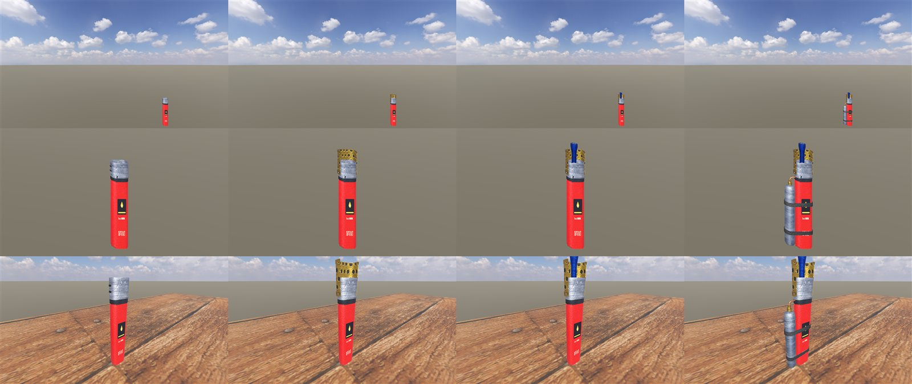
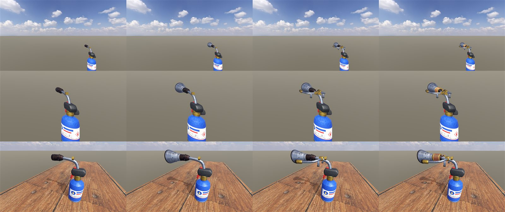
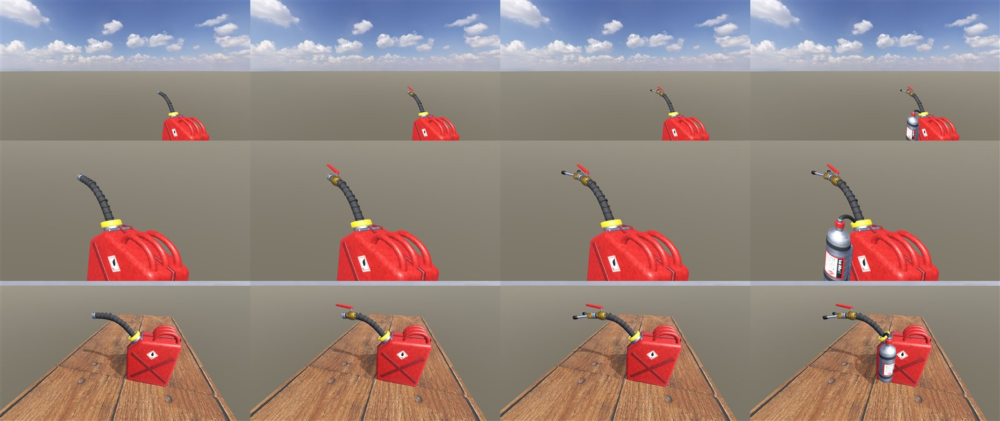
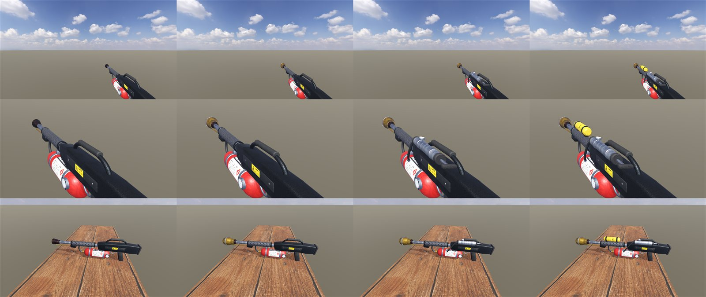
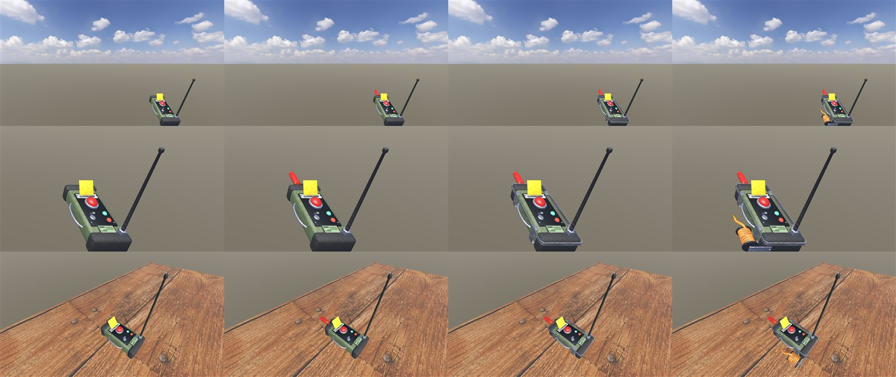
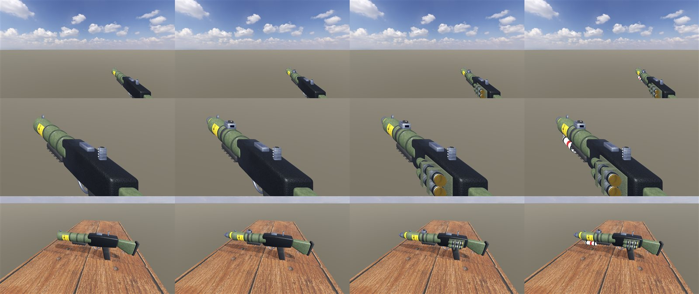
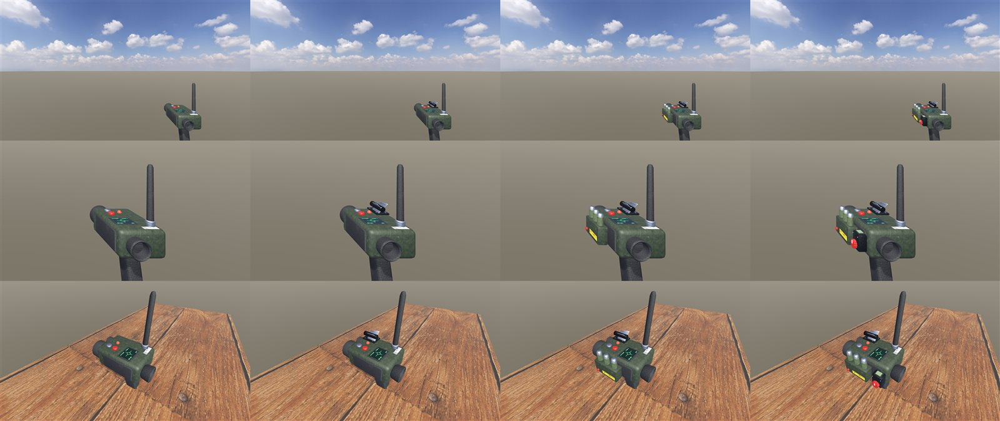
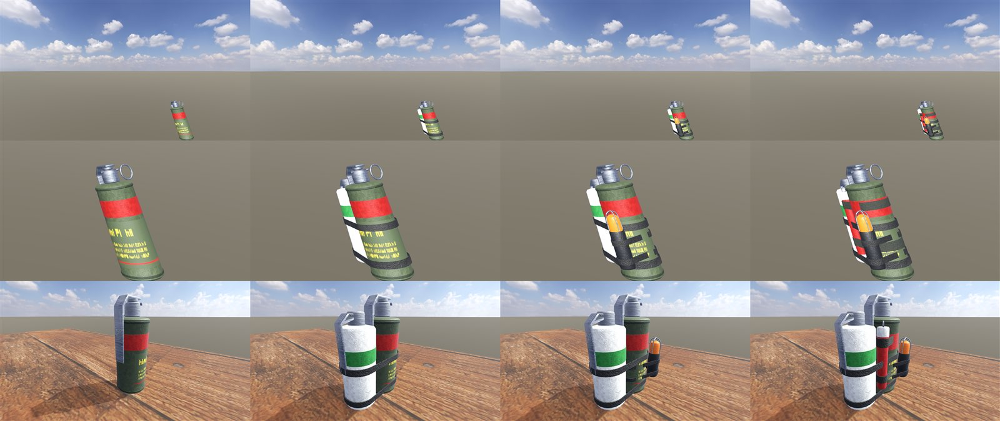
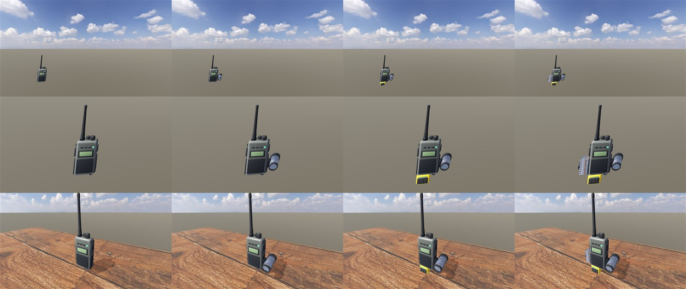
직접 보시고 말씀 주실 것: 소이 폭탄·집속 소이탄의 1칸 부품은 손에 든 화면에서 아직 작습니다. 위성 포격 볼트 장면에서 손이 방열판이 아니라 무전기 앞을 조이는 것처럼 보입니다. 연출과 소리가 맞는지는 아직 아무도 실제로 틀어 보지 못했습니다.
5. 가격과 무기 세기
왜 손대는가
v0.8.1을 두 시간 해 보시고 주신 말씀입니다. 많은 게 터무니없이 싸고, 살 게 없어 기다리기만 하는 구간이 있고, 사도 바뀌는 게 없는 것이 있었습니다. 시작하자마자 라이터를 재 3개에 살 수 있었습니다.
정하신 것
- 숲을 다 태우면 첫 회차 끝. 첫 회차는 성냥부터 항공 살포까지와 무기 아닌 강화 전부입니다. 위성 포격과 위성 출력은 다시 할 때의 몫으로 남겨 두었고, 다시 할 때 무엇이 이어지는지는 아직 정하지 않았습니다.
- 연료 드럼과 소이 폭탄의 차이를 줄이기. 다 익힌 드럼보다 소이 폭탄이 약 1.25배만 세도 되게 했습니다. 숲이 그 구간에서 천천히 타게 해서 항공 살포가 숲이 남아 있을 때 오게 하려는 것입니다.
하면서 찾은 것
- 숲이 갑자기 빨리 타던 원인은 자루 비우는 드론이었습니다. 드럼 탓으로 보였지만, 드론을 드럼과 거의 같은 때 사게 되어 있었습니다. 드론이 수거함 왕복을 없애서 벌이가 한꺼번에 뛰었습니다. 드론을 사는 시점을 옮겼습니다.
- 무기 세기를 잘못 재고 있었습니다. 직접 불붙인 나무만 세서, 번져서 탄 나무가 빠졌습니다. 그래서 폭탄처럼 넓게 태우는 무기가 약하게 잡혔습니다. 지금은 번진 나무까지 셉니다.
- 자동 플레이가 화염방사기를 제대로 못 썼습니다. 한 그루씩 걸어가 한 번 뿜던 것을 계속 뿜으며 움직이게 고쳤습니다. 플레이 쪽 동작은 바뀌지 않습니다.
- 가격은 손으로 정하지 않습니다. 매번 자동 플레이로 숲이 다 탈 때까지 돌리고, 그 실제 벌이에서 가격을 다시 계산합니다.
테스트 빌드에 들어갈 값 (22번째 실행, 계획한 구매 순서)
| 무기 | 목표 도착 | 지금 도착 |
|---|---|---|
| 라이터 | 5분 | 8.6분 |
| 가스 토치 | 16분 | 28.0분 |
| 드립 토치 | 28분 | 44.6분 |
| 화염방사기 | 39분 | 62.6분 |
| 연료 드럼 | 50분 | 78.1분 |
| 소이 폭탄 | 59분 | 94.2분 |
| 집속 소이탄 | 81분 | 123.2분 |
| 항공 살포 | 89분 | 134.6분 |
| 숲이 다 탐 | 130~180분 | 145.2분 |
목표 도착은 숲이 다 타는 시점에 맞춰 비율대로 늘려도 되게 했습니다. 지금 도착은 목표를 약 1.5~1.7배 늘린 것과 비슷합니다.
| 무기가 바뀔 때 | 지금 | 기준 |
|---|---|---|
| 화염방사기 → 연료 드럼 | 약 2.5배 | 1.8배 이상 |
| 연료 드럼 → 소이 폭탄 | 1.27배 | 약 1.25배 이상 |
| 소이 폭탄 → 집속 소이탄 | 약 2.3배 (추정) | 1.4배 이상 |
| 집속 소이탄 → 항공 살포 | 2.05배 | 1.4배 이상 |
"다 익힌 앞 무기"와 "막 산 다음 무기"를 같은 숲에서 비교한 값입니다. 같은 설정으로 재도 10~20%씩 흔들립니다.
아직 안 맞는 것 (플레이 소감 뒤 다듬기)
- 항공 살포는 숲이 다 타기 약 10분 전에 옵니다. 그 사이 강화 세 칸이 열리게 문턱을 맞췄지만, 새 문턱으로는 아직 끝까지 돌려 보지 않았습니다.
- 무기가 처음 계획보다 50~70% 늦게 옵니다. 회차가 145분으로 길어진 만큼 늘어난 것이라 간격은 비슷합니다.
- 살 게 없는 대기가 가장 길 때 30분 전 4.7분, 30분 뒤 8.9분입니다(목표 약 4분·7분).
- 값이 한 단계에서 크게 뛰는 곳이 두 군데 있습니다(넉넉하게 9→10단계 3.5배, 여러 발 3→4단계 3.9배).
2분 이후 구매 123개 중 그때 벌이로 20초도 안 되는 싼 구매는 8개(6.5%)입니다. 예전에는 168개 중 94개였습니다.
왜 오래 걸렸는가
값을 하나 바꾸면 벌이가 바뀌고, 그러면 가격과 도착 시각이 다 바뀌어서 처음부터 다시 돌려야 합니다. 한 번 끝까지 돌리는 데 약 14분이 걸리고, 측정이 흔들려서 같은 것을 여러 번 재야 합니다. 여기에 제가 기준을 너무 많이, 너무 촘촘하게 걸어서 한쪽을 맞추면 다른 쪽이 어긋났습니다. 그래서 지금 상태로 마무리하고 직접 해 보실 수 있게 하는 쪽으로 바꿨습니다.
가격표 (v0.8.1 → 지금)
무기 줄의 앞 3단계와 마지막 단계만 적었습니다. 다섯 단계 이하는 모두 적었습니다. 위성 포격과 위성 출력은 다시 할 때의 몫이라 값을 다시 매기지 않았습니다.
| 무기·탈것 | v0.8.1 | 지금 |
|---|---|---|
| 라이터 | 3 | 21 |
| 가스 토치 | 50 | 290 |
| 드립 토치 | 210 | 2,500 |
| 화염방사기 | 430 | 8,700 |
| 연료 드럼 | 1,800 | 24,000 |
| 소이 폭탄 | 2,600 | 31,000 |
| 집속 소이탄 | 15,000 | 110,000 |
| 항공 살포 | 27,000 | 140,000 |
| 위성 포격 | 74,000 | 1,000,000 |
| 산악자전거 | 81 | 360 |
| 사륜 오토바이 | 2,600 | 18,000 |
| 동력 패러글라이더 | 13,000 | 35,000 |
| 헬리콥터 | 40,000 | 75,000 |
| 줄 | 단계 | v0.8.1 | 지금 |
|---|---|---|---|
| 불 · 옮겨붙기 | 16 → 16 | 3 · 9 · 32 … 530,000 | 6 · 13 · 19 … 93,000 |
| 불 · 빨리 타기 | 6 → 3 | 3 · 24 · 190 … 4,300 | 3 · 38 · 280 |
| 불 · 멀리 옮겨붙기 | 7 → 3 | 21 · 49 · 230 … 42,000 | 87 · 4,300 · 23,000 |
| 불 · 같이 붙이기 | 3 → 3 | 6 · 270 · 2,900 | 13 · 390 · 6,000 |
| 불 · 불똥 | 8 → 5 | 550 · 740 · 1,500 … 410,000 | 3,400 · 13,000 · 43,000 · 64,000 · 74,000 |
| 무기 · 넓게 | 12 → 6 | 22 · 29 · 62 … 77,000 | 23 · 330 · 2,800 … 40,000 |
| 무기 · 빠르게 | 10 → 5 | 3 · 9 · 32 … 42,000 | 31 · 570 · 6,000 · 28,000 · 85,000 |
| 무기 · 멀리 | 8 → 4 | 220 · 280 · 430 … 69,000 | 540 · 4,300 · 17,000 · 61,000 |
| 무기 · 넉넉하게 | 10 → 10 | 3 · 14 · 25 … 47,000 | 6 · 13 · 50 … 71,000 |
| 무기 · 여러 발 | 6 → 6 | 2,600 · 3,000 · 12,000 … 170,000 | 8,400 · 14,000 · 16,000 … 100,000 |
| 재 · 자루 | 16 → 16 | 3 · 4 · 19 … 82,000 | 3 · 13 · 21 … 93,000 |
| 재 · 자석 | 8 → 4 | 3 · 14 · 32 … 4,400 | 4 · 25 · 86 · 790 |
| 재 · 수북한 재 | 6 → 6 | 3 · 64 · 650 … 420,000 | 120 · 700 · 11,000 … 460,000 |
| 재 · 빠른 붓기 | 10 → 10 | 3 · 19 · 58 … 66,000 | 6 · 15 · 170 … 51,000 |
| 나르기 · 다리 힘 | 6 → 3 | 3 · 4 · 22 … 330 | 7 · 90 · 400 |
| 나르기 · 탈것 손보기 | 6 → 3 | 200 · 490 · 1,800 … 99,000 | 750 · 7,300 · 27,000 |
| 나르기 · 드론 | 14 → 7 | 29 · 34 · 57 … 82,000 | 41 · 48 · 100 … 2,500 |
| 나르기 · 드론 짐칸 | 10 → 10 | 24 · 87 · 380 … 470,000 | 44 · 350 · 720 … 45,000 |
| 나르기 · 드론 속도 | 8 → 4 | 45 · 140 · 430 … 69,000 | 410 · 2,400 · 12,000 · 28,000 |
| 나르기 · 자루 비우는 드론 | 1 → 1 | 1,700 | 8,700 |
| 나르기 · 수거 헬기 | 4 → 4 | 2,500 · 5,900 · 29,000 · 81,000 | 6,200 · 12,000 · 50,000 · 58,000 |
| 나르기 · 헬기 흡입구 | 3 → 3 | 4,100 · 21,000 · 160,000 | 12,000 · 27,000 · 56,000 |
| 나르기 · 헬리콥터 흡입기 | 4 → 4 | 42,000 · 48,000 · 60,000 · 160,000 | 36,000 · 41,000 · 47,000 · 54,000 |
| 무기 · 위성 출력 | 0 → 5 | — | 140,000 · 180,000 · 210,000 · 280,000 · 490,000 |
단계 수를 줄인 줄(빨리 타기, 멀리 옮겨붙기, 불똥, 넓게, 빠르게, 멀리, 자석 등)은 마지막 단계가 주는 효과는 그대로이고 단계만 합쳤습니다. 가격은 자동 플레이로 숲이 다 탈 때까지 돌린 실제 벌이에서 계산했고, 손으로 정한 값은 없습니다.
6. 위성 출력과 남은 나무 찾기
- 위성 포격 뒤에 "위성 출력" 줄을 새로 넣었습니다. 1~4단계는 포격 반경을 100m에서 148m까지 넓히고, 5단계는 남은 나무를 스스로 쏩니다.
- 남은 나무가 5%가 되면 미니맵과 큰 지도(M)에 남은 나무가 모두 점으로 표시됩니다. 마지막 몇 그루를 찾아 헤매지 않게 하려는 것입니다.
- 남은 나무가 적을 때 화면이 끊기던 문제를 고쳤습니다. 원인은 지도에 남은 나무 표시를 매 프레임 하나씩 다시 그리던 것이었습니다. 800그루 남았을 때 프레임이 평균 44.6ms에서 4.7ms로, 큰 지도를 연 상태는 80ms에서 4.5ms로 줄었습니다.
- 위성은 다시 할 때의 몫으로 남겼고, 5단계 자동 포격이 화면을 끊는 문제는 QA 뒤에 원인을 재서 고칩니다.
7. 예전 저장
v0.8.1 저장이 그대로 열립니다. 단계 수를 줄인 줄(빨리 타기, 자석, 드론)은 산 만큼 올림해서 옮깁니다. 위성 포격까지 산 저장에서 새로 끼어든 드립 토치, 연료 드럼, 항공 살포를 다시 사야 하던 문제도 고쳤습니다.
8. 다음 순서
- QA가 v0.9 빌드를 실제로 실행해 확인합니다(지금 진행 중).
- 통과하면 승인을 받고 드라이브에 올립니다.
- 위성 자동 포격 끊김의 원인을 재서 고칩니다.
- 해 보신 소감을 듣고 가격과 강화 세기를 다음 판에서 다듬습니다.
무기 강화 작업대의 처음 계획은 계획 5에 있습니다.
기다리고 있는 결정
- 환기 방식: 계획 4 (작업 지시, 구역 검수, 날씨, 태울 거리 등)
- 다시 할 때 무엇이 이어지는지 (손에 익기, 무기, 재, 위성)
- 헬기를 산 뒤 패러글라이더로 돌아가는 키를 붙일지
- 본사 말투, 다람쥐, 일지